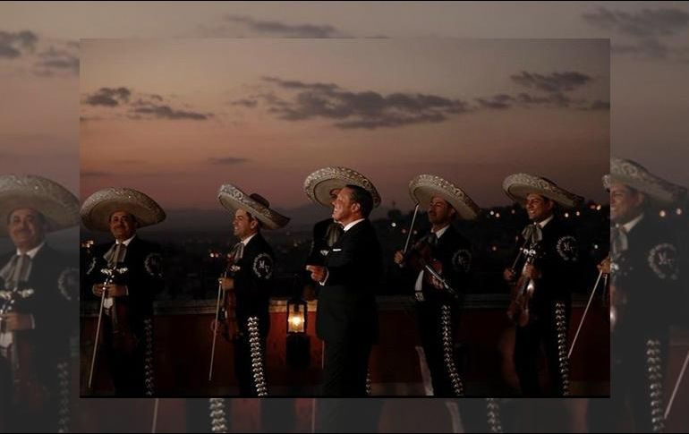

Log out
Luis Miguel iniciará gira mundial en México
De esta forma, el estelar cantante mexicano, de 47 años, regresará a este recinto de la Ciudad de México donde ha logrado grandes éxitos pero también ha sido centro de sus polémicas luego de que cancelara varios conciertos a finales del 2015 que representaron el inicio de una etapa a la baja en su carrera.
Tras cumplir con su parada en la capital, la gira continuará su recorrido por México.La promotora indicó que el 4 y 5 de diciembre iniciará la preventa de boletos y el 6 de diciembre tendrá lugar la venta general al público.
Luis Miguel ha vendido más de 100 millones de discos en su carrera y se ha hecho acreedor a todos los premios y reconocimientos existentes en la industria de la música, entre los cuales destacan cinco Grammy y cuatro Grammy Latinos.

Apenas el viernes pasado, Luis Miguel dio a conocer su más reciente producción "¡México por siempre!", el cual representa su regreso a la música tras meses de polémicas, cancelaciones de conciertos y críticas a su imagen.
El Sol de México, llamado así porque eclipsa a las otras grandes estrellas, publicó el álbum tras siete años de silencio discográfico y se acerca nuevamente al mariachi, género musical mexicano que tanto éxito le ha dado en el pasado.
Tras su salida a la venta, el álbum se colocó de inmediato en los primeros lugares en las listas de éxitos de Hispanoamérica.